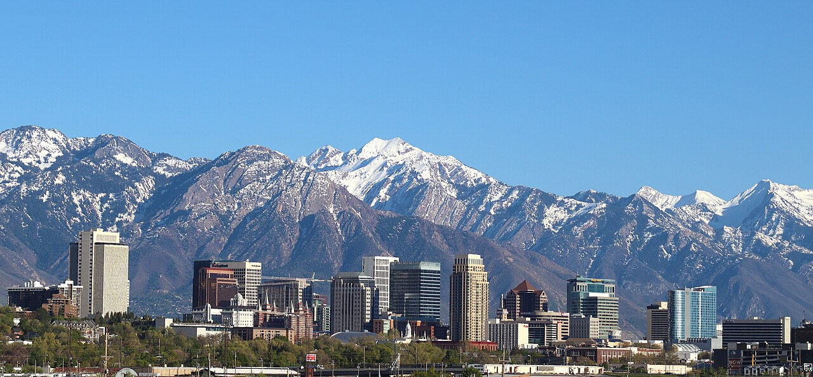

My favorite city is Salt Lake City
I hope to visit the City one day and be in the Salt Lake Temple and step where the pionner and Prophets have step
Utah
Salt Lake City was founded in 1847 by settlers led by Brigham Young who were seeking to escape persecution they had experienced while living farther east. The Mormon pioneers, as they would come to be known, entered a semi-arid valley and immediately began building an extensive irrigation network that could feed the population and foster future growth. Salt Lake City's street grid system is based on a standard compass grid plan, with the southeast corner of Temple Square serving as the origin of the Salt Lake meridian. Owing to its proximity to the Great Salt Lake, the city was originally named Great Salt Lake City; the word "Great" was dropped from the city's name in 1868.
The Conference Center, in Salt Lake City, Utah, is the premier meeting hall for the Church of Jesus Christ of Latter-day Saints (LDS Church). Completed in 2000, the 21,000-seat Conference Center replaced the traditional use of the nearby Salt Lake Tabernacle, built in 1868, for the church's twice-yearly general conference and other major gatherings, devotionals, and events